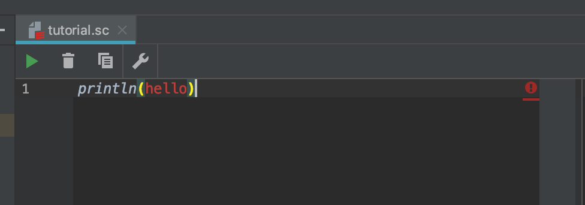

文字列と数値
前ページでは文字の出力を行いました。
ダブルコーテーションの意味¶
以下のコードでhelloを"で囲う意味はあるのでしょうか？
println("hello") > hello
試しに"を外してみます

helloの文字が真っ赤になりました。
これはprintln関数のように、helloという関数を使おうとしたが、見つからなかったということを表します。
文字列(String型)¶
Scalaでは文字を表すために、"を使用します。
"で囲われているものを文字列といいます。
数値(Int型)¶
数値は1や2や3とかです。
文字列が"で囲うのに対して、 数値は囲う必要がないです。
これは、関数の頭文字に数値を使用できないという性質があるためです。
なにはともあれ適当な数字を入れて実行してみましょう。
println(123) > 123
四則演算¶
四則演算とは、
足し算、
引き算、
掛け算、
割り算です。
実際にやってみましょう
// 足し算 println(6 + 3) > 9 // 引き算 println(6 - 3) > 3 // 掛け算 println(6 * 3) > 18 // 割り算 println(6 / 3) > 2 // 割り算(余り) println(5 % 3) > 2
優先順位¶
計算の優先順位は通常の計算と同じです。
掛け算や割り算より、足し算引き算を優先したい場合はカッコを使いましょう。
println(2 * 4 - 2) > 6 println(2 * (4 - 2)) > 4
浮動小数点数(Float型)¶
浮動小数点数とは小数のことです。
実は数値同士の計算では小数を求める事ができません。
// 小数以下は切り捨てられる println(1 / 2) > 0 // Float型同士の計算 println(1.0 / 2.0) > 0.5 // Int型とFloat型の計算でも小数を求められる println(1 / 2.0) > 0.5 // 型を指定してあげるとInt型の値を入れても自動的にFloat型になる val a: Int = 1 val b: Float = 2 println(a / b) > 0.5
文字列の数字
数値であっても"で囲うことで文字列になってしまいます。
文字列は四則演算できませんので注意しましょう。
"100" // 文字列の100 100 // 数値の100